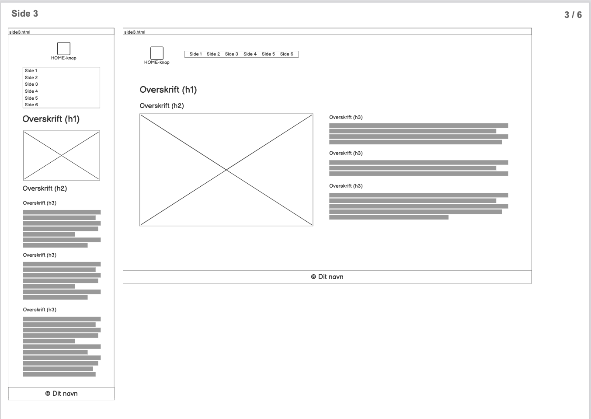

Til at udføre opgaven har jeg bla. benyttet mig af følgende
værktøjer og metoder
wireframes for at skabe visuelt overblik over opgaven
layout diagram
XD programmet til at lave splash billede
grafisk design layout: farveteori(næsten analog farvepalette -
uden komplementærfarve), billeder, typografi og komposition
(byggestenene) Blandt andet ud fra Sean Adams teori omkring
konsekvens i udseende og harmoni i form af gentagelse af former
grafisk design komposition: whitespace, justering, kontraster og
gentagelser
globale indhold komponenter: navigation og footer
lokale indhold komponenter: indhold i form af tekst og billeder
Stil/visuelt udtryk:
webfonte (“Inter” & “Mukta”, der begge minder om “Times New Roman
men uden seriffer)
billeder
gestalt principper (“Den komplette form”
Brugervenlighed:
ensartethed ved brug af navbar/menu, og samme opbygning på alle
sider
burger menu på mobil
Jeg har taget stilling til stilen og det visuelle udtryk, blandt andet ved udvælgelse af webfonte og billeder.
Til koden har jeg benyttet
grids, media queries i CSS filerne for at gøre siderne responsive
funktion i JavaScript for at omdanne menuen/navbar til burger menu
på mobil skærm
Stilart: Brutalist Webdesign
Kendetegnet ved at stilen ofte har et enten “larmende” visuelt udtryk eller et meget minimalistisk udtryk. Jeg valgte nogle udtryk fra stilen, ud fra fokusområderne i design layout og design kompositionsystem skrifttyper
ensfarvede baggrund
geometriske komponenter / skarpe kanter
indholdet opdelt i tabeller (grid)
Største fokus har været at skabe ensartethed. Til det har jeg teoretisk benyttet mig af wireframes for at se et 1:1 resultat for strukturen på siderne. Ud fra wireframes var det synligt hvor det var whitespace på de enkelte sider, og det gjorde det overskueligt at lave justeringer.
Stil/visuelt udtryk:
Jeg har taget stilling til stilen og det visuelle udtryk, blandt andet ved udvælgelse af webfonte og billeder.
Til koden har jeg benyttet
Stilart: Brutalist Webdesign
Kendetegnet ved at stilen ofte har et enten “larmende” visuelt udtryk eller et meget minimalistisk udtryk. Jeg valgte nogle udtryk fra stilen, ud fra fokusområderne i design layout og design komposition
Største fokus har været at skabe ensartethed. Til det har jeg teoretisk benyttet mig af wireframes for at se et 1:1 resultat for strukturen på siderne. Ud fra wireframes var det synligt hvor det var whitespace på de enkelte sider, og det gjorde det overskueligt at lave justeringer.